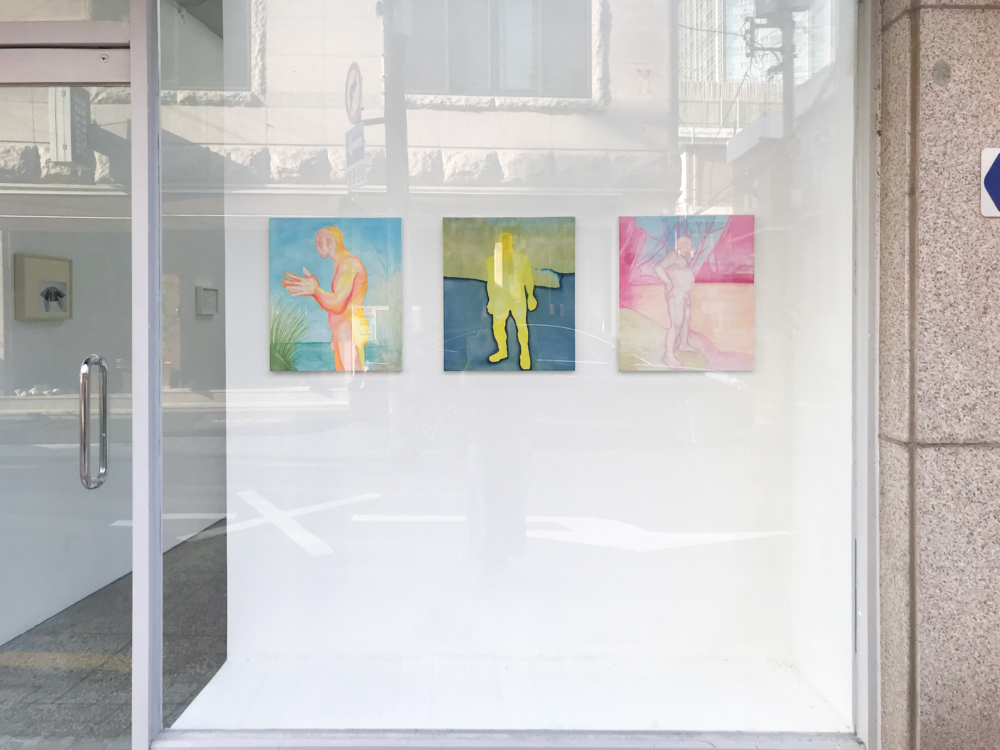

있었다는 사실을 기록하지 못한 사진을 바라보는 일
<
우찬, 안녕.
얼굴 본 지 그리 오래되지 않았지만 오늘 하루 어떻게 보내고 있는지?
저번에 말한대로 이번주에 일본에 갔다면 지금 일본에 있거나, 일본에 있던 기분으로 지금 서울에서 무언가를 하고 있겠지?
무엇을 하고 있니?
재훈, 의자에 앉아 3초간 우찬의 모습을 상상해본다.
내가 아는 사람이 지금 어딘가에서 어떤 활동을 하고 있을거라 상상해보는 일을 (인사말 쓰다) 갑자기 해보고 싶었어.
그게 알게 모르게 살아가는 데 있어 어떤 긴장감을 쥐어주거든. 머리에 힘을 주게 된달까. ^^
합정지구에서 하고 있는 《2023 Anti-Freeze》에 대해 이야기하려 메일을 보내.
전시장 위치가 자은도현과 같이 쓰는 작업실이랑 그리 멀지 않기도 하고, 참여 작가들 중 두 작가가 사진 작업을, 다른 한 작가가 퀴어의 삶을 소재로 한 작업을 하길래 보러 가게 됐어. 세 작가 다 다룰 수 있을지 모르겠다. 열심히 써봐야지.

1층과 지하 1층으로 이루어진 전시장에서, 1층으로 들어가면 김유자 작가의 작품과 허호 작가의 작품이 자리하고 있어. 사진-액자는 김유자의 것이고 페인팅은 허호의 것. 김유자의 작품들에 대해 먼저 말해볼게.
리플렛을 보지 않은 상태로 이 사진-액자들을 쭉 봤을 때 나는 '뭐지..? 이런 걸 한다고?' 싶었어.
여느 사진 작업들처럼, 사진에 담긴 대상으로 이야기하는 방식의 사진은 아니었거든.
물론 어떤 사물이나 사람들이 사진에 찍혀있긴 하지.
하지만 흑백을 선택함으로써 대상의 색을 포기한 것도 그렇고 어떤 정황을 파악할 수 있을만한, 소위 사진 선생들이 말하는 '코드'로 읽어낼 수 있을만한 시각 정보랄 게 따로 없거나 부족한 사진들이었어.
심지어 <어두운 길에서 만나는 동물들에게>는 182x110cm만큼의 큰 크기로 프린트한 작품인데 고이 접어서 흰 선반 위에 옷감 샘플처럼 놓아뒀더라?
이 선택을 보고 나니까 김유자가 보여주고 싶었던 게 대상이 아니라 패턴에 가깝다는 심증을 품게 됐어.
그래서 다음 수순으로 작품을 아주 가까이서 보기 시작했는데 보다 보니까 사진을 이루는 필름 입자들이 유난히 도드라진다는 점에 눈이 가더라.
고해상도의 사진 이미지를 fine art에서의 사진의 필요충분조건으로 여겨볼 수 있다면, 보통은 그러한 입자를 기술적 오류로 간주하고 안 보여주려고 하잖아.
그런데 김유자의 사진들에서 "나 좀 봐주세요~" 하고 외치는 듯이 자글거리는 입자들을 계속해서 보다 보니 '아, 입자를 보여주고 싶었구나. 대상 별로 안 중요했고. 필름 자체에 대한 이야기인가?'로 생각이 넘어갔어.

그렇지만 자글거리는 입자를 근거로 이 작품들이 필름 카메라로 촬영한 사진이었다는 사실을 추리하기 외에는 전시 공간 안에서 더 읽어낼만한 소스가 없더라. 액자 선택도 전시장 벽면에 맞춰서 대부분 하얀색으로 했길래 뭔가 더 있을 것 같은데.. 생각하다가 리플렛을 집어들었고, 깜짝 놀랐음.
사진 이미지 자체에는 정보가 별로 없었는데 사진의 제목에는 정보가 많더라고?
의외네.. 하면서 제목 순서대로 사진들을 다시 보니까 제목과 함께 봤을 때의 드라마가 있더라.
제목 없이 작품만 봤을 때와 제목과 작품을 같이 봤을 때의 감상 전후가 크게 달라서 (후자가 더 좋았음) 작품을 전시 언어보다 책의 언어로 보여줬다면 더 단번에 납득하지 않았을까 싶었어.
김유자는 이번 전시에서 관객을 단번에 사로잡거나 하고 싶진 않았나봐.
아, 제목이랑 작품 관계는 어떻게 됐었냐면 예를 들면 아래 작품 같은 경우
그래서 내가 발견하지 못한 건가? 싶었는데

그래서 오...... 저 손가락 실루엣 이미지랑 액자 색, 여백을 제목이랑 이렇게 엮었구나.
재밌다. 작가가 똑똑하네.
이 사진의 물웅덩이를 '테두리'라는 단어로 가리키는 걸 보고서는 평면 매체인 사진에 드러나는 선Line으로부터 촉발되는 (문학적) 상상에 관심이 있는건가? 싶었어.
그러다가 리플렛 뒤에 수록된 김유자의 글을 읽었는데
: 1. a point of transition between two different states.
2. a pointed and where two curves meet.
"어느 이야기든 내가 더는 볼 수 없는 지점이 생겨난다."
- 앤 카슨, 『짧은 이야기들』
.
.
.
두 해 전 여름 친구가 준, 유통기한이 지난 필름을 자동 필름카메라에 넣어 촬영했다. 자동 필름 카메라는 가벼워서 휴대하기 좋지만 초점이 어긋나기 십상이고 광량도 부족하기에 그간 선호하지 않았다.
.
며칠 뒤 필름을 현상하니 내가 본 것은 지워져 있었다. 필름은 길 한 가운데 누워 있던 고양이를 지웠고 수풀을 지웠으며 책상의 결을 지웠다. 알고 보니 몇 년 전 친구가 공항에서 수하물을 부칠 때 필름이 X-Ray에 여러번 노출됐고, 8년의 유통기한이 지나 대상을 선명하게 기록하는 기능을 상실해 발생한 일이었다.
.
본 것과 사진이 불일치할 때 무얼 봤다고 말할 수 있을까. 이 균열을 바로잡는 대신 더 지켜보고 싶었다.
.
해양 분야에서 Cusp는 "파도의 활동으로 해안의 물질들이 바다 쪽으로 돌출되게 형성되는 굴곡이 심한 연속체의 한 부분"이라는 뜻으로 사용되는데, 충돌로 형성된 지형이라는 설명이 좋았다. 충돌의 예측 불가능한 성질이 좋았고 존재하던 것들이 부딪혀 새로운 굴곡을 만들어 내는 순간이 좋았다. Cusp는 충돌을 마주하기로 결심할 때만 볼 수 있는 곳이다. 그것은 지금까지의 관성에서 벗어나 사진을 바라볼 때 다른 것을 보게 되리란 믿음과 이어졌다.
제목이나 스테이트먼트를 안 읽었으면 감상이 완전히 달랐을 거라고 말할 수 있을 정도로 작품과 작품 제목, 작가의 말 사이의 역할 분배 능력이 뛰어나더라.
반대로 말하면 작품 자체로 충분히 보여주지 못했다고도 할 수 있겠지.
하지만 액자 색깔을 대부분 하얀색으로 맞춰 전시장의 하얀 벽에 흡수시킴으로써 공간을 여백으로 활용한 선택을 참작해봤을 때 김유자는 위 글도 작업의 일부라고 분명히 인지한 것 같아.
그런 이유로 작품으로 드러낼 수 있는 정보값의 총량을 일부러 낮게 설정한 듯하고. 더 설명적으로 가고 싶었다면 유통기한이 지났다던 필름 롤을 실제로 보여주던가 할 수도 있었을텐데 말이야.
우리 저번에 같이 요즘 필름 가격 너무 많이 올랐다는 이야기 했었잖아?
따지고 보면 <Cusp>는 필름의 가격 폭등으로 인해 필름 카메라보다 필름 자체를 구하기 힘들어진 지금 이 시절을 통과하는 작업이라고도 보여.
이 시절의 은유로서 <Cusp>를 생각해봤을 때 '무언가를 보고 싶은 마음에 대해 생각한다'는 작가의 말이나 없다는 걸 잊어버리면 된다는 영화 <버닝>의 대사가 떠오른다.
없다는 걸 잊어버릴 수는 없지 않을까? 사진 찍기라는 행위를 무언가를 보고 싶어서, 혹은 더 잘 보고 싶어서, 아니면 나중에 다시 꺼내 보고 싶어서 하게되는 몸짓으로 생각해봤을 때
그 결과물로서의 사진에 대상이 찍혀져 있지 않다면 사진을 찍은 사람의 '보고 싶은 마음'은 과연 어디로 가는 걸까?
<Cusp>를 통해 받은 위 질문에 대해 나는 그 마음이 없어지지 않는다고 생각해. 우리가 모임 끝날 때마다 찍는 모임 사진을 인스타그램에 공유하지 않듯이.
보이지 않는 마음의 힘이 어디 가지 않는다는 연약한 믿음에 대해 계속 생각해보게 되네.
원래 세 작가에 대해 모두 다 쓸라 그랬는데 다 못 쓰겠다. ^^
김상하 작가의 <게더>에 대해서는 같이 이야기 나눠보고 싶었는데 혹시 하고 싶은 말 있었다면 답장 줘도 좋고 월요일에 이야기해도 좋고.
곧 보자!
재훈
Re: 있었다는 사실을 기록하지 못한 사진을 바라보는 일
김상하
2023.05.28